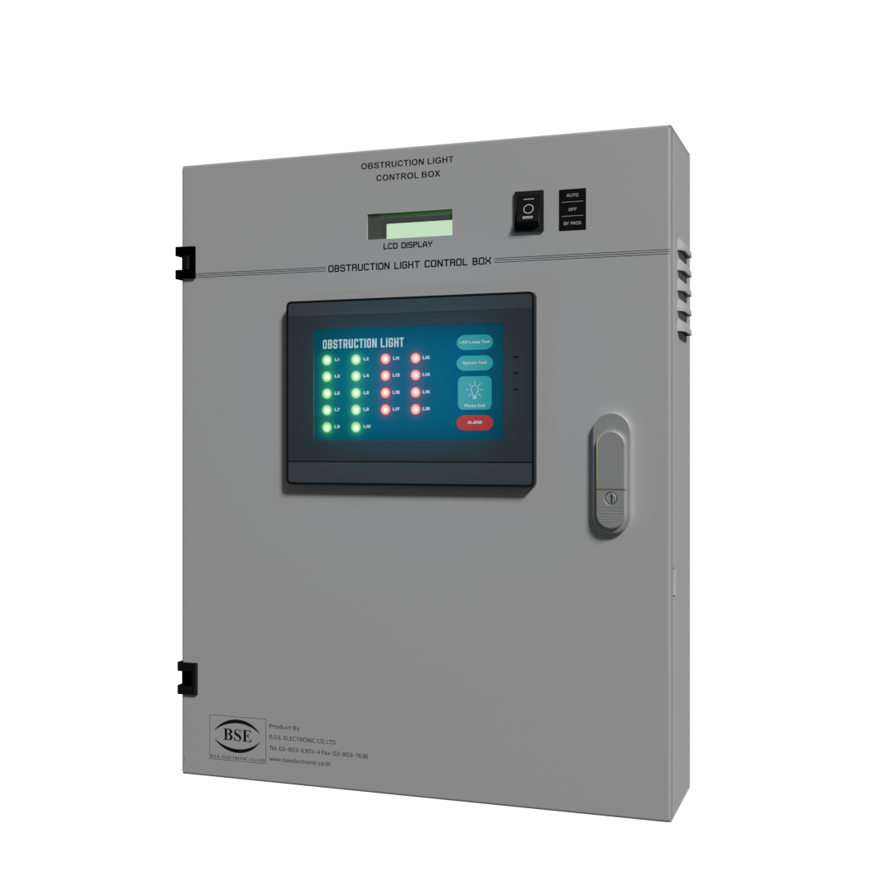

003 — Interactive Engineering / Training
Aviation Control
Training System
Turning a real aviation obstruction light control system into an interactive 3D training experience built with Blender and Unity.


Overview
The Aviation Control Training System is an interactive 3D simulation developed to help engineers, technicians, contractors, and system operators understand how an aviation obstruction light control cabinet works.
Instead of relying only on manuals, wiring diagrams, and physical equipment, users can explore the cabinet digitally and interact with its operating modes directly through a browser-based experience.
My Role
I developed the project from the engineering concept through the final interactive experience.
My work included understanding the real control system, translating operating logic into digital states, creating the 3D environment, developing interactions in Unity, programming the control behaviour in C#, and preparing the simulation for web deployment.
The Challenge
Industrial control systems can be difficult to understand from technical documentation alone.
A control cabinet may include multiple operating modes, power states, alarms, indicators, and equipment relationships that are clear to experienced engineers but difficult for new technicians to visualize.
The challenge was to translate this complex engineering logic into an experience that could be explored visually and understood through interaction.
The Outcome
The final result is a browser-accessible interactive training system that transforms a physical industrial control cabinet into a digital learning experience.
Users can explore the equipment, switch operating modes, observe system behaviour, and understand the relationship between controls, indicators, alarms, and the aviation obstruction lighting system.
Engineering → Digital Experience
How the System Works
The project translates the behaviour of a real industrial control system into interactive software.
Physical System
Real aviation obstruction light control equipment.
Engineering Logic
Operating modes, inputs, outputs and system states.
3D Environment
Cabinet and components recreated digitally.
Unity Simulation
Engineering behaviour converted into interactive software.
User Experience
Users learn by interacting with the system.
Development Process
From Real Equipment to Interactive Training
System Research
Studied the real aviation obstruction light control cabinet, operating modes, equipment relationships, wiring logic, alarms, and expected system behaviour.
Logic Mapping
Converted engineering behaviour into understandable software states and interaction rules.
Physical switches, indicators and control logic became digital inputs, states, conditions and outputs.
3D Modeling
Recreated the equipment and cabinet environment in Blender to provide a recognizable digital representation of the physical system.
Unity Development
Imported the 3D assets into Unity and developed the interactive environment.
C# scripts control user interaction, operating states, system response, indicators and training behaviour.
System Simulation
Developed simulations for key operating conditions including control modes, power states, equipment response, faults and alarm behaviour.
Web Deployment
Prepared the Unity experience for browser-based deployment so users could access the training system without installing dedicated software.
Simulation
Interactive Features
The training experience focuses on learning through direct interaction rather than passive technical documentation.
AUTO Mode
Demonstrates normal automatic system operation and equipment response.
BYPASS Mode
Allows users to understand manual override behaviour and alternative operating conditions.
OFF State
Shows how the equipment responds when system operation is disabled.
Main / Backup Power
Demonstrates the relationship between primary and backup operating states.
Fault Simulation
Simulated fault conditions help users understand system behaviour when equipment does not operate normally.
Alarm Response
Visual indicators demonstrate how the control system communicates abnormal operating conditions.
Behind the Build
From Hardware to Software
Each stage of development transformed physical engineering knowledge into a digital interactive product.
 01 / REAL SYSTEM
01 / REAL SYSTEM
Physical Equipment
Understanding how the real cabinet operates before building the simulation.
 02 / BLENDER
02 / BLENDER
3D Modeling
Translating industrial hardware into optimized digital assets.
 03 / UNITY
03 / UNITY
Interactive Environment
Building system states, interaction, camera behaviour and visual feedback.
 04 / C#
04 / C#
System Logic
Programming interactions and translating engineering behaviour into software logic.
 05 / WEB
05 / WEB
Deployment
Delivering the final interactive training experience through the web.
Interaction Logic
Connecting User Actions to Engineering Behaviour
User Interaction
Switches / Controls / Mode Selection
Control State
C# evaluates current system conditions
Equipment Behaviour
Power / Lamp / Alarm / Indicator states
Visual Training
Users immediately see the result of their actions
Stack & Tools
Interactive simulation
System & interaction logic
3D modeling
Browser deployment
Web integration
Industrial control logic
Live Project
Experience the System
Explore the interactive training project developed to demonstrate aviation obstruction light control system operation.